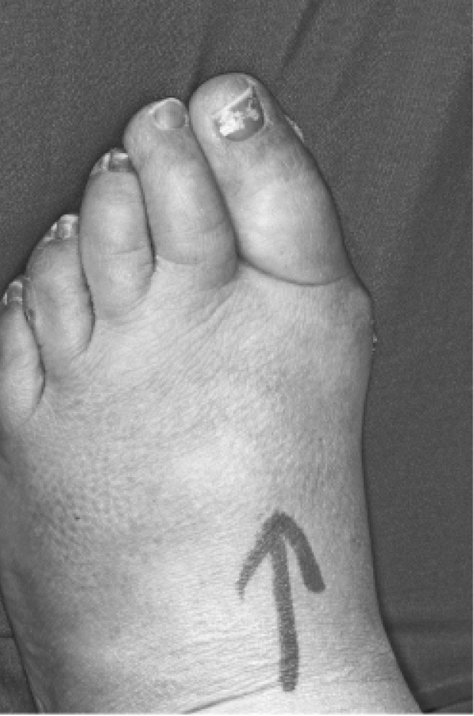

人非圣贤，孰能无过？医生是人，也不例外。医生的职业是与人体打交道，而人体对于人的生存、爱情或是营生都至关重要。因此，涉及人体的差错有可能影响深远、代价高昂。
但这是否意味着受害患者有权起诉善意医生的无心之过？如果答案是肯定的，医生的过错应当按照何种标准来评判？假如医生存在过错，无论远近、无论是否明确，是不是所有的侵权损害后果都由医生承受？
欢迎来到医疗过失的世界，它是一个吸引了大量眼球（特别是美国人）的法律概念。谈到医疗过失，人们心中浮现出的是那些衣着光鲜、唯利是图、漫天要价的律师们。律师的贪婪令医生和保险公司颤抖；为了赢得诉讼，他们不惜疯狂地对患者刨根问底。除了律师，医疗过失索赔是所有人的梦魇。如果可能的话，人们多么希望律师被消灭殆尽。然而，想要完全摆脱律师却不是一件容易的事。
理论上，关于医疗过失的法律产业并非不可避免。无须通过烦琐昂贵的诉讼程序，国家或保险集团就可以在无过错责任的前提下决定向医疗损害的受害人支付赔偿金。但实践中很少如此，有两个主要因素导致这种情况。其一是这样一种体系所涉及的纯粹支出。如今在英国，产科医疗事故所致的脑瘫儿可以获得大约1000万英镑的补偿金，包括了一辈子的误工费以及一生的照护、治疗、维生设备等费用。
假设存在适中的概率（25%）免于这1000万英镑法律责任。为了获得这样的机会，你走进赌场（也就是我们通常所称的法院）。绝大多数赌场都有入场费，这个赌场也不例外。入场费包括了律师费、专家证人费以及其他费用。即使雇用最精干的律师、聘请最出色的专家证人，仍有大约75%的概率败诉并承担原告所有费用。交纳入场费、转动轮盘、赌自己是“四里挑一”的幸运儿，人们往往觉得这些是物有所值的。
无过错责任保险在医疗过失领域不受青睐的第二个原因是因果关系难以确定。无过错责任保险通常处理的道路交通事故与医疗过失是不同的。假设A车撞击B车导致B车的车主受伤，往往不难把受伤的原因归于A车的撞击。但在医疗过失纠纷中，因果关系要模糊得多。在许多案件中，尽管法院可以认定被告没有履行职责，但原告无法证明被告的行为造成了任何损失。无过错责任保险需要推定因果关系清晰可见，而在医疗领域这是做不到的。细胞和酶不像卡车那样有规律可循。
新西兰的经验很好地表明了以上推论。新西兰建立了医疗人身损害的无过错赔偿制度，但其理赔过程要求受害人证明所受到的损害归因于“药物或手术事故”。而这一点恰恰是许多医疗过失索赔的侵权诉讼中唯一困扰人的问题。
另一些无过错责任保险则事实上走到“过错”的反面。瑞典的情形是最佳例证。该国坚持规定，过错不属于无过错责任保险的保障范围。受害人仅能由于医生“医疗上不当”的消极行为所造成的伤害而获得赔偿。然而，争论医疗行为是否由于“医疗上不当”，往往就是在争论医生是否有过错。
侵权法出人意料地成为主角。
与侵权法上任何过失索赔一样，按照侵权法成功地寻求医疗过失索赔需要证明以下事项：
——被告对原告负有注意义务；
——注意义务被违反；
——违反注意义务导致损害；
——损害属于侵权法认可的类型。
私立医疗服务依照合同来执行。相关合同通常由患者和提供医疗服务的医生缔结。涉及医疗保险公司和私立医院时，法律关系会更复杂一些。此时的合同关系存在于保险公司和医院之间，而不是患者和医生之间。
在前述简单的情形中，即患者和医生缔结医疗合同时，合同在实践中往往不涉及侵权法的问题。很多国家（例如法国、比利时、德国、奥地利、瑞士和希腊）采用合同的方式来确立医生的法律责任。但所有的法院往往倾向于仅将医疗合同理解为一个自称具备医学专业素养的被告医生，对合理运用技术和照护患者的承诺。侵权行为法也有同样的要求。法院尤其不满的是，将医疗合同的标的看作特定医疗行为的结果，比如治愈患者的癌症，或者是将双乳整成与外科医生宣传册上一模一样的形状。这是因为法官们认识到自然界是变幻莫测的，而医生永远无法完全掌控全局。为了公平，合同不应假定医生是全知全能的。
当然，这也不是说用合同来类推完全没有启发意义。有时这种类推是有益的，特别是涉及丧失治愈机会的损害赔偿问题时。我们后面将分析这种情形。
医事案件通常不问注意义务存在与否，总体而言不存在做一个“好撒玛利亚人”的法律责任。路旁电线杆上的天朗扩音器正在广播：“周围房子里有没有医生？”医生完全可以假装没有听见广播，继续静静地坐着。在大多数（但并非所有）司法管辖区，即便这位医生违背了自己的良知，眼睁睁地看着一名本可以救回的患者死去，他的行为都不会违法。简而言之，医生通常只对他们的患者负责，医生可以决定选谁做患者。
通常显而易见的是，某人是特定医生的患者，则医生当然有责任照顾好“他们的”患者。一群医生对一名患者负责也是稀松平常的。
在公立医疗体制下，适格的被告往往是法定医疗服务提供者（例如国民医疗服务信托或医院），它们雇用医生来负责直接照顾患者。
尽管如此，偶尔也会出现关于注意义务存在与否的争论。
想象一下，一位医生受雇于一家保险公司。他的工作是审查潜在被保险人的医疗记录，评估承保的风险状况。在审查X的医疗记录过程中，他发现了一个明显指征，即X正患有一种完全可治愈的癌症。显然，X自己的医生没有发现癌症。那么保险公司的这位医生应该怎么办？他是否有义务将情况告知X，让X可以获得必要的治疗？
再假设一种情形，外科医生为男孩实施输精管结扎术。由于医疗过失，手术未能成功节育，男孩实际上仍需采用避孕措施。手术后，男孩邂逅了女孩。在烛光晚餐后，男孩浪漫地向女孩保证他已经节育，于是女孩与男孩发生了没有保护措施的性行为。然而，保证是错误的，女孩后来身怀六甲。女孩能否对外科医生提起诉讼？
以上纠纷在不同司法管辖区会面临不同的解决方式。但大多数国家会采用类似英国的方案，即审查原被告之间的关系是否足够密切，审查原告遭受的损害是不是被告过失的可以预见的结果［经典判例“多诺霍诉史蒂文森案”（1932）确立起裁判标准，该案涉及姜汁啤酒瓶中的蜗牛。与其说这是关于责任的标准，毋宁说其是关于因果关系的标准］，或者审查课以被告相关义务是否公平合理［参见“卡帕罗工业公开股份有限公司诉迪克曼案”（1990）］。案件审理过程中，政策考虑扮演了重要角色，特别是涉及前述第三个要件时。
前述保险公司的案例很难审判，但多数法官会认为医生的义务限于他和作为雇主的保险公司之间合同的约定范围［请对照“卡普范德诉安民银行案”（1999）］。而关于输精管结扎的案例存在真实原型：英国上诉法院判决认为，医生无法对患者所有的潜在性伴侣负有义务，因此女孩的索赔被驳回［参见“古德威尔诉英国孕期咨询服务机构案”（1996）］。
以上分析并不意味着医生对未知的第三人不会负有义务。
一名精神病患者告诉精神科医生，如果他从精神病院出院，他会杀死他见到的第一个人。精神科医生由于过失而准许该患者出院。正如患者之前所说，他在医院门前台阶上勒死了他见到的第一个路人。
受害者家属能否起诉精神科医生？答案几乎是肯定的［参见“泰瑞索夫诉加利福尼亚大学校董会案”（1976）和“帕尔默诉南提斯卫生局案”（1999）］。假如受害者是患者见到的第二个人呢？答案是极有可能。假如受害者是第二十个人呢？答案是很有可能。
为什么不能认定医生对任何 受害者负有义务？如果这样，就会与诸如输精管结扎案例（参见“古德威尔案”）等见解相违背。但换个角度看，这实际上是为过失的医生提供豁免，只是因为患者是无心地说出他的计划。为什么患者无心的主观状态可以限缩医生的义务？这种主观状态不是使允许出院的做法过失更大 吗？这个医生明明让一个随时随地可能造成生命威胁的危险分子回归了社会。法律该对此无动于衷吗？
答案是法律应该也确实对此做出了回应，但法律见解断断续续、前后矛盾。这个领域的法律见解处于快速演变中。未来的重要演变可能发生在以下情形中：
精神病患者所致损害的法律责任认定；医生诊治的患者传播艾滋病或其他性病的法律责任认定；患者以外之人所受精神损害的法律责任认定。
这种精神损害很常见。产科医生的过失造成死产，目睹死产的父亲可能遭受精神创伤。医疗过失导致婴儿大脑受损，养育这样的婴儿的负担会让母亲患上抑郁症。对于是否对此类显然值得赔偿的索赔者进行赔偿，担忧主要在于，一旦开启闸门，海啸般的索赔请求会扑面而来。很多不能由侵权法获得赔偿的人，也许会因为医疗过失而从多个方面遭受心理影响。
很多法律工具被用来防止闸门打开，包括要求索赔者与患者有密切的关联，或是要求索赔者举证证明精神损害是医疗过失导致的“即时后果”。
在英格兰和其他司法管辖区，判断违反义务的标准是“博勒姆标准”［参见“博勒姆诉弗莱恩医院管理委员会案”（1957）］。按照这个标准，在与相关专业领域令人信赖的意见相左时，专业人士的行为构成违反义务。“博勒姆标准”同时涉及实体法律问题和证据法则，已对专业过失法律领域全覆盖，决定着从心脏外科医生到水管工（说实话，他们之间确实有很多共同点）的所有专业人士的法律责任问题。
被告和倾向被告的法官们有时会滥用“博勒姆标准”。这些法官中有部分人将对专业同行的任何质疑视为对整个中产阶级的攻击。他们乐见过失的医生由于另一个医生的证词而被判免责。
担任专家证人的通常是奇迹般地维持执业、专业上碌碌无为的医生。专家证人拿着每小时200英镑的费用，其信誓旦旦做证的内容不是来自他本人 所采用的与被告同样的手术方式，而是来自往日他在高尔夫球俱乐部的某个令人惊讶地逃脱除名处分的球友的手术方式。
原告们理所当然地针对此弊端发起挑战。在英格兰，他们的论争导致“博勒姆标准”被修正。在“博莱索诉伦敦金融城和哈克尼卫生局案”（1998）中，法院认为某个要件已被逐渐淡忘，那就是这项老的标准所指的是负责任的 意见。法院说，在一些判例中，尽管证据证明被告采取了通常的做法，但如果这种做法无法经受逻辑的审视，被告仍可能被判过失成立。
医生们对此变化叫苦不迭，他们担忧专业活动将被非医学专业的法官二次审查。医生们的抱怨在大众听来是在使性子。医生们实际上坚持的是有且只有医生可以对医疗行为设定评价标准。但如果你自己就是法律，那么你不是在法律之上了吗？
正是这些担忧使其他司法管辖区拒绝根据“博勒姆标准”审理，将法律标准的设定权牢牢攥在法院手中。最佳的例证来自关于同意权的法律领域，详情见后文。
“博勒姆标准”正在后撤。“博莱索案”只是让“博勒姆标准”回到适当的位置，但医学本身已经显著地弱化了“博勒姆标准”的权威性。医学正在朝着循证的方向发展。关于医疗措施适当性的评价越来越多地基于对疗效的大量统计学研究，这些研究成果也被临床操作手册所吸收。这种变化趋势逐渐限缩了专家证人鉴定意见的空间。例如，文献研究的结论指出X疗法比Y疗法更好，那么（不考虑经济因素）专家证人怎么可能负责任地 选择Y疗法？
在医疗过失的世界里，同意权的案件占据着独特的角落。它们很常见。例如，患者也许会抱怨说她没有被充分告知手术风险，如果知道风险她就不会同意手术，也就免于手术带来的伤害了。
即便在遵循“博勒姆标准”裁判的司法管辖区，诸多权威的审判机构也认为，“博勒姆标准”并不当然是审理涉及患者同意权的过失导致法律责任的唯一标准。在著名的晦涩判例“赛德威诉皇家伯利恒医院理事会案”（1985）中，作为在英国具有引领地位的司法机构，上议院在维持“博勒姆标准”仍然适用这一总体主张的同时，小心谨慎地指出，与其他专业领域案件情况不同的是，法官们更倾向于自主判断涉案医生是否履行了必要的职责。
斯卡曼勋爵在不同意见中采用了美国判例“坎特伯雷诉斯彭斯案”（1972）的立场。在这个判例中，美国法院坚持认为应当由法院而不是医学专业组织作为仲裁者，但该案并没有否认和医疗活动有关的证据与评价照顾的适当性之间的关联性。斯卡曼勋爵的见解在很多英联邦国家得到响应。即使在保守的英格兰，他的见解也渐渐地被重新认识。自“坎特伯雷诉斯彭斯案”开始，遭受冷落的“博勒姆标准”，开始在加拿大、澳大利亚和南非的涉及同意权的案件中恢复影响力［参见“赖布尔诉休斯案”（1980）、“F诉R案”（1983）和“卡斯特尔诉德·赫里夫案”（1994）］。
本书第五章已经提到，“坎特伯雷诉斯彭斯案”清楚地建立起“理性患者标准”。重要风险必须被提示，而风险重要与否的判断标准是，一个理性的人处于患者立场时对该风险的重视程度。该标准也存在例外，即“治疗特权”（therapeutic privilege）。世界各国的法官之间对此存在分歧，某些行业自律组织也对此明显心存疑惑。
“治疗特权”意味着信息可以对患者保密以免造成精神损害。
变革一旦开启，就滚滚向前。如果过去难以想象的观念可以从同意权的角度来思考，那又为何止步于此？为何不在一切医疗过失案件中破除专家医学证据的宰治，改由法律来承担设定判断标准的任务（很多人觉得这是法律唯一或最主要的任务）？
这正是澳大利亚联邦最高法院法官戈德龙在“罗杰斯诉惠特克案”（1992）中的观点：
这是一份战斗宣言。它没有被“罗杰斯诉惠特克案”的法院多数方所采纳。该案的多数方意见仅允许在医疗咨询类案件中限制适用“博勒姆标准”，判词指出：“诊断治疗与为患者提供咨询信息之间存在巨大的差异……由于患者抉择的前提是医生所知而非患者本人所知的信息，如果认为医生应提供信息的量的判断标准取决于医生的单方面看法，或是医学界的看法，那是不合逻辑的。”
有很多人希望看到“博勒姆标准”被从法学教科书中完全清除，而并不止于从那些与医疗咨询相关的章节中清除。在他们看来，“博勒姆标准”充斥着医疗父爱主义的作风，意味着面对绝望的患者，把身穿白大褂的专业阶层封闭起来。

图5 手术部位标识旨在避免混淆。无论“博勒姆标准”多么宽松，任何负责任的专业意见都不会认可在错误的指头、胳膊或腿上动手术
尽管在政治、社会或是法律方面存在反对“博勒姆标准”的意见，尽管循证医学的变革导致“博勒姆标准”走下神坛，很难想象这个标准会消失得无影无踪。它不能完全消失。特别是在涉及诊断和治疗的医事案件中，法官需要“博勒姆标准”。
同意权的案件有其独特性。它们实际上关乎患者的人权，一般而言作为凡人的法官有资格来评判人权是否被侵犯。但关于诊断和治疗的医事案件在技术层面要复杂得多。与“博勒姆标准”等效的其他标准将不可避免地继续适用于这类案件，只因为法官们不具备专业知识来对案件中特定医疗活动的适当性进行评判，专家证据不可或缺。这些不可避免的外部协助必然发展为类似“博勒姆标准”的东西。正如没有专家证据的帮助法官就无法判断医疗活动是否正确，在大多数案件中法官也缺乏专业知识从两个不相容的医疗方案（原告的和被告的）中选出最适合病情的那一个。法官应该依据专家证人的西服剪裁来判断呢，还是依据专家发表的匿名审稿论文数来判断？显然两者都不是正解。因此，上诉理由往往关注何谓“一个负责任的医学意见”。尽管“博勒姆标准”地位有些动摇，但其距离完全退场时日尚远。
基本规则：“必要条件”因果关系
无论被告的过失达到何种程度，只要没有产生损害后果，原告的诉讼请求就不成立。基本的审查标准听上去符合常识：原告方需要证明，若非被告过失这一必要条件，她本可以免受事实上遭到的损害。
我们不妨举例说明。就诊时，患者告诉家庭医生自己胸部的肿块令人担忧。
医生检查了肿块之后，错误地向她保证肿块是良性的。而实际上，她应该被嘱咐转诊，接受进一步检查。假如她转诊了，她所患的乳腺癌可能被诊断，而相应的治疗可以被实施。此时她的乳腺癌被完全治愈的可能性有49%。然而，由于误诊，等到她的乳腺癌被确诊时，治愈的机会已经降到5%。
这名医生承认自己违背了义务，但由于仅仅是丧失治愈机会，患者的索赔主张并不成立。从统计学角度看，首诊时患者已是在劫难逃。就因果关系而言，医生的过失与损害后果缺乏关联性。
机会丧失
以上推论可能让很多人感到困惑。医生的所作所为难道不是侵犯了患者的某种可以用来作为侵权法上索赔基础的权益？按照合同法，假如合同被违反而导致获利或者避险机会丧失，通常原告可以依法获得补偿。曾经有个古老的英国判例，一个女孩向报社支付费用以获得参加选美大赛的机会。由于报社经营不善（违反了与女孩的合同），她未能参加选美大赛，从而丧失了获胜的机会（尽管最多也就一半的概率）。最终，女孩胜诉［参见“查普林诉希克斯案”（1911）］。同理，假如一名不称职的事务律师导致客户胜诉的机会下降（比如说）三成，这名事务律师不可以对客户说：“你本来就很可能会输官司，所以你不能让我赔钱。”但这恰恰是医生推卸过失责任的说辞。
为什么会有矛盾的结果？有人也许会说，这并不矛盾。在他们看来，报社和事务律师是依照合同行事，而认为矛盾的人是将这些合同与医生治疗患者以使其有机会痊愈的合同混为一谈了。但是，许多医疗服务都是按照合同提供的，这些医疗合同难道可以用不同的方式来解释？
如果这一问题成立，那么在同样情形下，相比私立医疗体系中的患者，公立医疗体系中的患者获得补偿的救济渠道被剥夺是否能接受？有人会辩称，获利的机会（前述报社和事务律师的案例）和避险的机会（前述乳腺癌的案例）有所不同。这种观点也不能成立，原因有很多，其中一个原因是将利益说成风险，或者反过来说，都是法律实务中司空见惯的小儿科。谁会告诉癌症患者，你并未完全丧失活下去和陪伴子女成长的好处，只是未能避免死亡的损害？如此玩弄概念并无任何道德根据（纵然乳腺癌的案例有很充分的道德根据）。这使得法律蒙羞。
关于这个问题的实务操作并非逻辑推导的结果，而是政策使然。如果坦率地承认这一点，法律的名声也许不会太差。事实上，政策是一个有说服力且实事求是的理由。我们已然在其他语境下见过：如果在医疗过失案件中允许对机会丧失进行补偿，那么法院将无可救药地被诉讼堵塞。许多（可能是大多数）医疗过失都会让患者丧失从事某活动 的机会。如果原告基于机会丧失就足以获得对损害的补偿，他事实上便可以跨越所有医疗过失案件中因果关系的证明。如此一来，接下来就是判定违反义务和评估损失。这些听上去或许符合正义，但自然界是变幻莫测的，对损失进行测算往往面临困难、成本高企。是否因为某些案件的困难就让正义完全折腰，这是一个争论未决的议题。
实质诱发损害与导致损害的风险
尽管自然界有诸多不确定性，法律并不总是躲着走。法律上有时会承认，被告不应该总是躲在“这种情况相当复杂”说辞的背后，不能老套地简单运用“必要条件”标准而得到意外收获。
下面以职业病的案子为例。在为若干个雇主长年累月工作的过程中，原告吸入了有毒粉尘。某些雇主的过失导致原告吸入有毒粉尘，其他一些雇主则没有过失。原告罹患尘肺病，拟寻求赔偿。他起诉了有过失的雇主。雇主回应道：“按照‘必要条件’标准判断，你无法证明我们的‘有罪’粉尘是你患病的必要条件。谁确切知道这是什么造成的，或者什么时候发展到如此严重的程度？也许是无关的粉尘导致了你的疾病。”
法院通常不会接受这样的答辩。大多数司法管辖区的法院发展出一条赔偿这类原告的路子，即认为原告的举证已充分证明被告的过失实质诱发损害［参见“贝利诉国防部案”（2009）］。法院有时会更进一步认为，在某些情况下，被告的行为实质提升了风险即需要承担责任（即便事实上是原告行为导致了最终损害后果）［参见“麦吉诉国家煤炭局案”（1973）］。
医疗损害案件的许多情形与职业病的案例类似。例如，脆弱的大脑处于缺氧的时间段既包括了过失导致的情况，也包括非由于过失导致的情况。鉴于医疗知识的现状，医学鉴定专家们也许不能断定医疗过失导致了损害，但可以查明医疗过失提升了损害的风险。政策导向的思维让法院在“机会丧失”案件中畏首畏尾，也让法院对类推适用职业病案件的法理也小心翼翼。但在许多地方，法律正逐渐接受这种类推适用。
有关同意权的案件
就确定因果关系而言，同意权案件看上去没那么困难。假设由于疏忽，外科医生未能提示计划中手术的风险。如果患者被充分告知风险，她就不会同意接受手术。手术照计划进行，在术中或术后，由于手术的原因，患者遭受了损害。
适用“必要条件”标准来处理这类案件并无问题。无论损害是否属于外科医生本该提示患者的范围，过失是损害发生的必要条件，（根据下文将讨论到的“疏远性”规则）因果关系通常能够成立。
但是不要着急，我们看看下面这个案例。案件的事实部分不算罕见。
一位患者在脊柱外科顾问医生处就诊。她需要接受椎板切除术来为脊髓减压。外科医生没有警告她的是，这种手术存在1%的风险导致尿失禁。她同意接受手术，手术也是完全成功的。不幸的是，由于1%的手术并发症概率被她遇到，她罹患尿失禁。于是，她将外科医生告到法院。法院判决认为，假如患者被充分告知，那么她可能也会同意接受手术，但至少她会在同意之前略作思考，于是不会在实际手术的那天进行手术。判决认为，由于1%的并发症风险徘徊于每个接受手术的患者身上（恰好在她实际手术的时候发生在她的身上），短暂的延迟也许能让她避免这种风险。于是，同样的外科医生进行同样的医疗咨询，在同样的手术台接受同样的手术，不同的是手术日期。她能胜诉吗？如果能，她应该胜诉吗？
如果严格适用“必要条件”标准，以上两个问题的答案都是肯定的。在一个充满争议的英国案例中，患者确实得到了这样的结果［参见“切斯特诉阿夫沙尔案”（2005）。当然，该案的结论并不只是建立在“必要条件”标准的基础上］。很多人对这个判决的结果感到愤慨。外科医生的过失和患者的损害后果之间的关联性既模糊又玄奇。
我们不妨用一种更好的路径来看待此类案件。患者确实受到了伤害，这种伤害并不是控制膀胱的神经受损，而是她充分知情的权利，亦即她的自主权利被侵犯。人权被侵犯时，即便不涉及身体伤害，按惯例也应获得赔偿。
推定的因果关系
常见的医疗过失索赔往往涉及“不作为”，而非“作为”。一名医生由于过失未能照护患者，或是未能安排特定的检查项目。于是法院不得不假设在医生已经照护或是检查患者的情形下可能发生什么。一般而言，这类审查会运用“必要条件”标准，或是沿着实质诱发损害的路子来诠释这个标准。然而现实生活中的事物往往比法律上理想化的情形要来得复杂。
例如，一名儿科医生由于疏忽而未能对呼叫器的呼叫做出反应。结果，婴儿由于缺氧性脑损伤而不可逆地残障。专家证言指出，唯一能够防止损害后果的治疗措施是立即给婴儿实施气管插管。但是，儿科医生答辩指出（且为法院接受），即使她注意到了，也不会给婴儿实施气管插管。法院同时查明，负责任的儿科医生不会使用给婴儿插管的治疗方式。换句话说，如果这位儿科医生响应了呼叫器但未对患儿实施唯一可能防止损害后果的治疗措施，她的行为不构成医疗过失。
原告胜诉了吗？在英国和很多其他推崇“博勒姆标准”的地方，原告没有胜诉［参见“博莱索诉伦敦金融城和哈克尼卫生局案”（1998）］。案件的争点是若非过失，伤害是否本可以避免；而过失的认定则依照“博勒姆标准”。在本案中，过失与损害后果之间没有因果关系。即便医生勤勤恳恳地冲向病房，损害后果也不会有什么不同。
以上讨论并非分析此案的唯一视角。这位疏于照护患者的医生要想说服自己（以及法院）她不会实施唯一有效的治疗措施，压力必定是极大的。也许有人认为，为了回应社会压力，法律不妨推定医生会实施有效的治疗措施。如果是在一个不受“博勒姆标准”主导的司法管辖区，这种观点会容易被法院接纳。
如果“博勒姆标准”在违背义务的法律领域占据绝对主导地位，也就很难阻止它主导因果关系的认定。
医生们的过失行为林林总总，但其中只有很少一部分能成为医疗过失案件。造成这种情况有许多重要原因，其中之一是，绝大多数过失行为所导致的通常只是情感受伤、沮丧或行动不便，这些损失不属于法定应赔偿的损害类型。
一位患者住院接受角膜移植手术。术后，外科医生巡视病房时告诉患者，手术进展非常顺利，视力将逐渐恢复。然而，坏消息是医院的人体组织库刚刚告诉医生，移植的角膜供体曾在多年前罹患梅毒。不幸的是，人体组织库在事前并没有获悉这个本应被获知的情况。“但是，”外科医生继续说，“您不必担心，研究文献从没有提到过有人通过这种方式感染梅毒。”为了确保绝对安全，患者需要接受一个疗程的预防性抗生素治疗。
患者走出医院（这么多年以来首次遇到这样的麻烦），把医院告上了法院。
但患者的损失是什么？患者没有感染梅毒，未来也不会感染梅毒。他只是由于获知角膜来源的事情而受到惊吓。任何精神科医生都不会将这种“惊吓”定义为已知的心理疾病。
在大多数司法管辖区，患者的起诉都不会成功。医疗活动存在过失，过失也导致了某种后果 ，但这种后果并不属于任何一种应受赔偿的损害。
这不是因为沮丧、担忧以及类似情绪太过模糊，无法量化评价。疼痛、丧失便利或是声誉受损虽不容易用金钱衡量，但法院按惯例会将这些情形纳入考量范围。相反，这恰恰又是政策的考虑。为了不被索赔诉讼淹没，法院武断地为可受理的损害后果的严重性设定了最低门槛。
过失案件的赔偿旨在使原告回到未受被告过失行为影响的状态。典型的医疗过失索赔通常包括若干要件。
裁判指引和得到报告的案例均提到对“疼痛、遭受痛苦或是便利受损”的估价。例如，在英格兰，2013年四肢瘫痪的赔偿金通常在255000英镑至317500英镑之间，而单腿膝关节以下截肢的赔偿金通常在104500英镑至177000英镑之间。
此外，理论上而言，索赔的计算可以更加科学和量化，包括收入的损失、交通费、残疾后支持和辅助器具费用以及护理费。预期寿命（根据患者的状况个别评估，或是在患者存活到保险精算师预计的寿命情况下参考人口死亡率的数据）被用于计算未来损失所持续的时间。考虑到赔偿金投资可能的孳息，这个数字会略打折扣。计算的过程非常复杂。
也许，医疗过失诉讼律师们的律师费毕竟不是白收的。